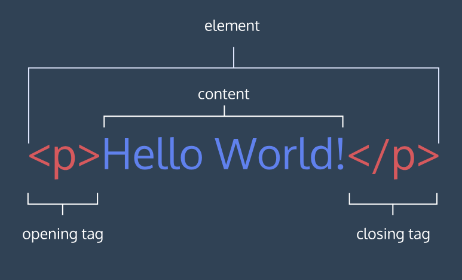

HTML
I.Elements and Structure
1.Introduction
HTML stands for Hyper Text Markup Language:
- A markup language is a computer language that defines the structure and presentation of raw text.
- In HTML, the computer can interpret raw text that is wrapped in HTML elements.
- HyperText is text displayed on a computer or device that provides access to other text through links, also known as hyperlinks.
2.HTML Anatomy

3.Key HTML Elements
The Body
Only content inside the opening and closing body tags can be displayed to the screen.
<body>
<p>Hello World</p>
</body>
Headings
In HTML, there are six different headings, or heading elements.
<body>
<h1>main headings</h1>
<h2>subheadings1</h2>
<h3>subheadings2</h3>
<h4>subheadings3</h4>
<h5>subheadings4</h5>
<h6>subheadings5</h6>
</body>
Divs